Happiest birthday, butterfly!
This is my simple and small attempt to compile small fragmanets of your life. Hope you like it!
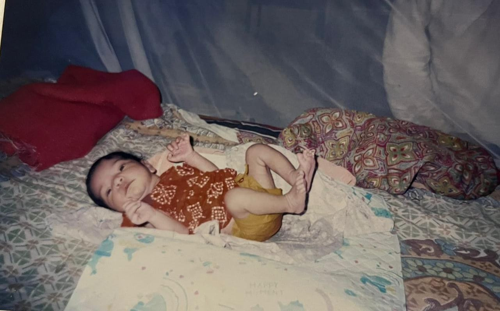
On 19th November, 2004 God created a beautiful star and decided to put all the greatest and lovely qualities in it. God sent the star down on earth so it may illuminate the world around. This is the start of that star's mesmerizing journey on this earth Masha Allah.
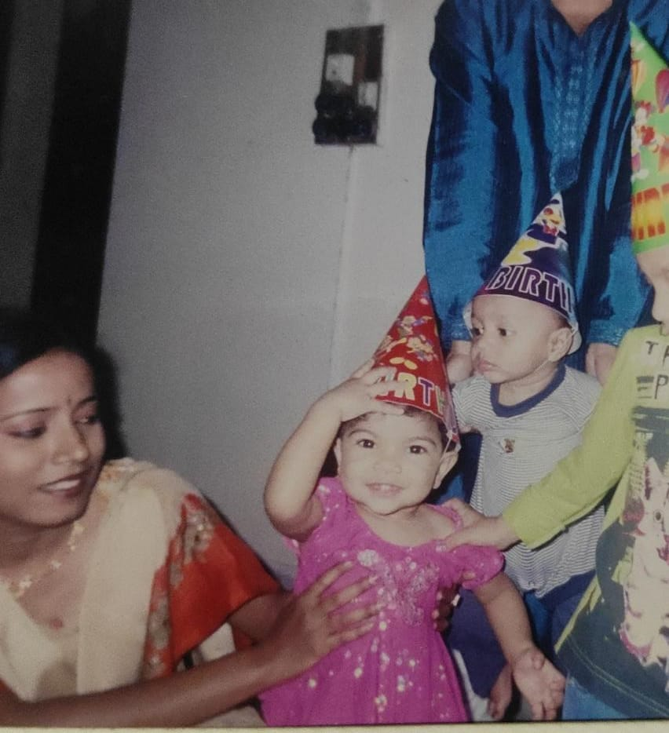This was the the first time when you first and last time were promoted from telling your age by months to years.
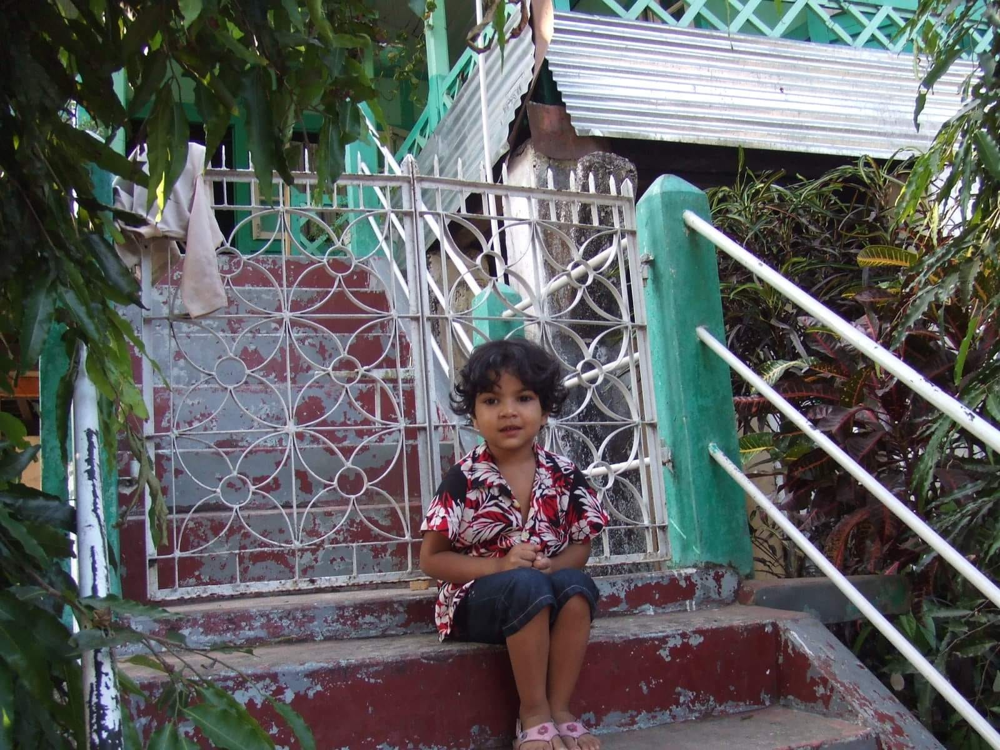The star was young but ever vibrant. Even at a young age she never failed to put smiles to the people around them"
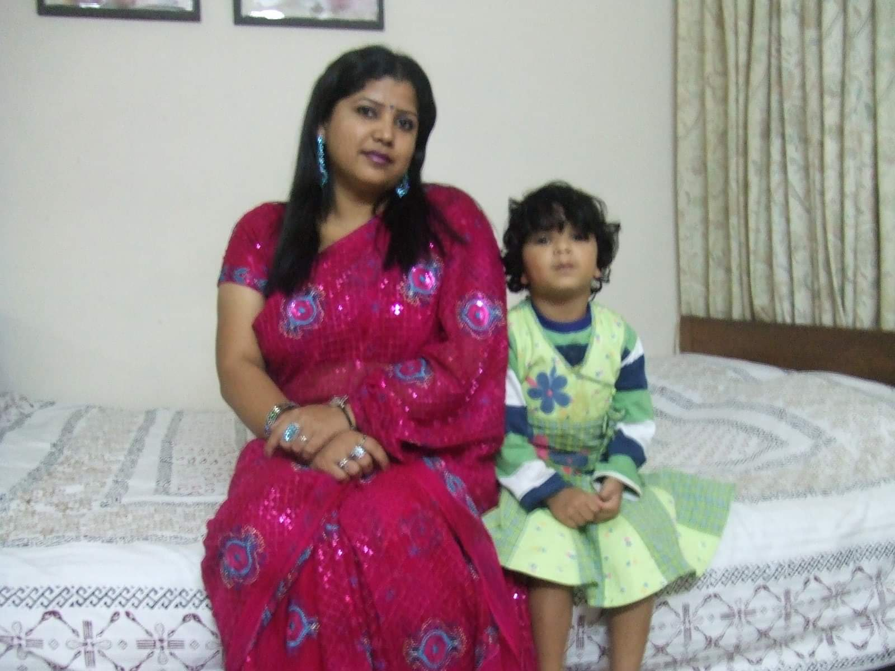The star was growing and nurturing all the good qualities she has but also acquiring new ones. She is young but a growing force of mother nature
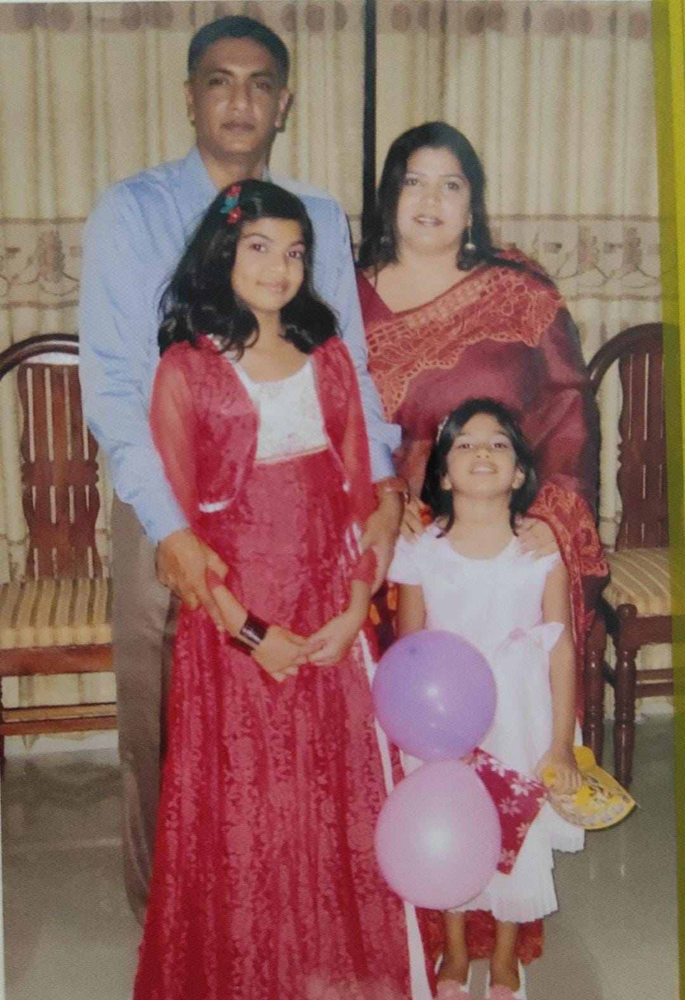Star's first decade! Her childhood was a mixture of everything. She was the sweetest little star with universe in her eyes turning to her puberty.
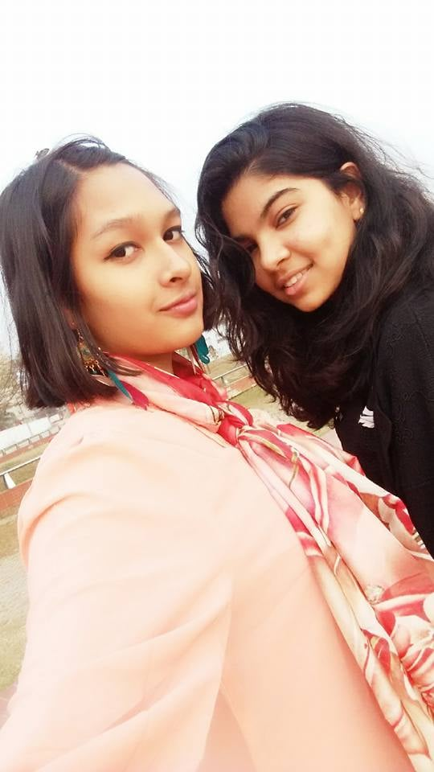Her spirit ran wild begetting the purest form there may be. She shone brighter than the cosmos itself
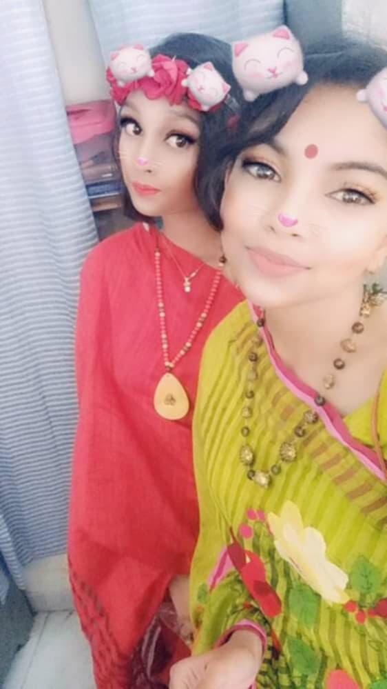15 is the year she started to become unstoppable. Soul with no impurity and beauty of the truest rarity
They said sixteens are sweet but nothing is as sweeter as her. The warmth of her pleasant energy brought peace.
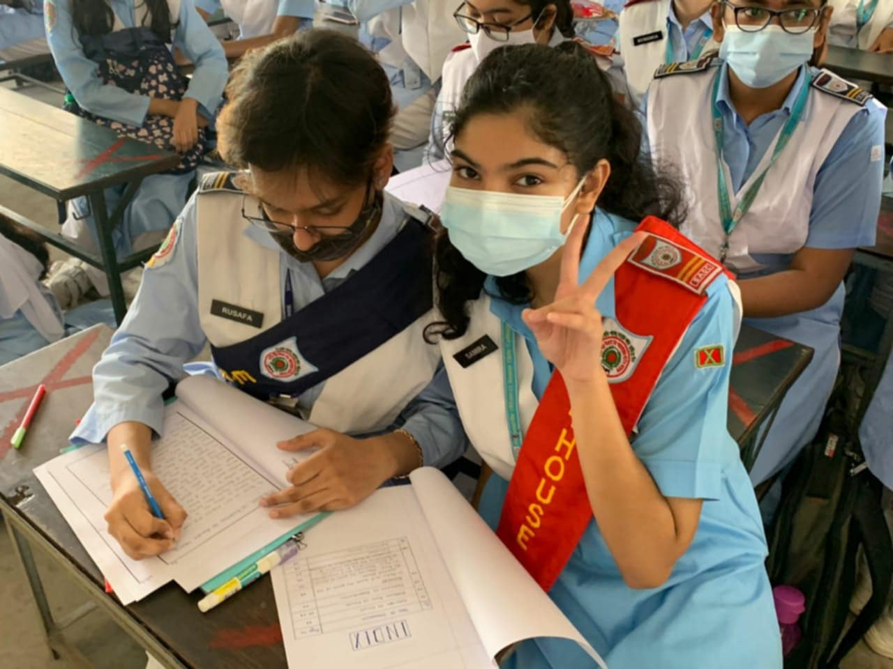Its her 17th birthday. It suited her perfectly as she stepped into adulthood with style. Her phenomenon of authetic beauty is eye catching. Her voice ever smooth and soothing.
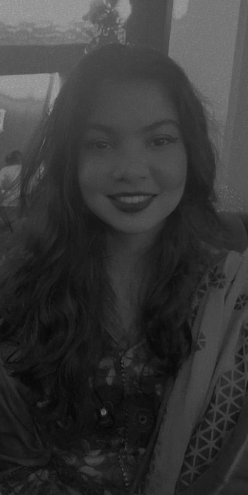The upward figure of all the qualities those are ever desired in a woman are all in there. She is the dream, a constant source of inspirational energy and a mindblowing lotus which kept on spreading her trails of charm endlessly.
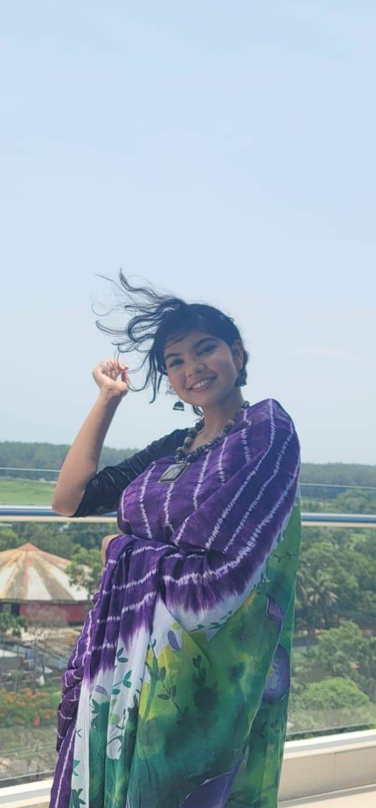As a plan of God, the star stepped into a boy's house. Immediately, upon seeing her the boy was smitten by her. "She is different" "She's gentle with a fire in her heart",felt the boy. She is a poetry in motion.
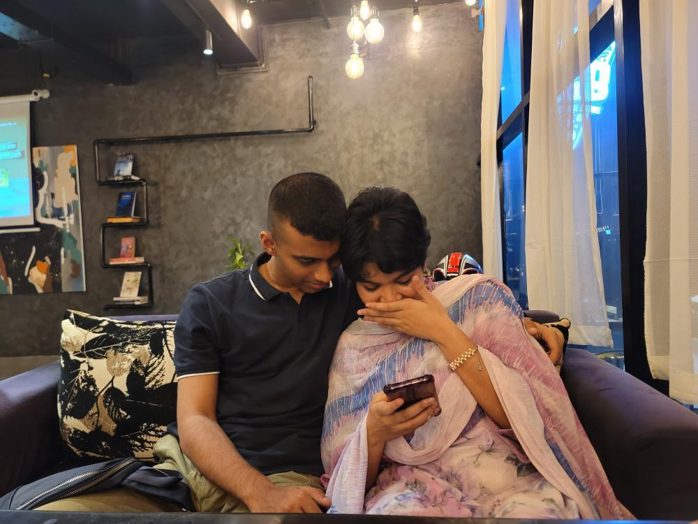The star is one of a kind the boy realized. It melted his core, electrified him when she approached. Her smile can make him push over a mountain. He fell into an endless pit of unlabelled love. The girl thought "who's this guy?". In the process of figuring him out, she fell in love. She let herself go and embraced the boy when she realized that the boy felt the same way as she did. The star and boy merged to create their own land of Shompaurko. It was God's way of providing them comfort and peace which they found between themselves.
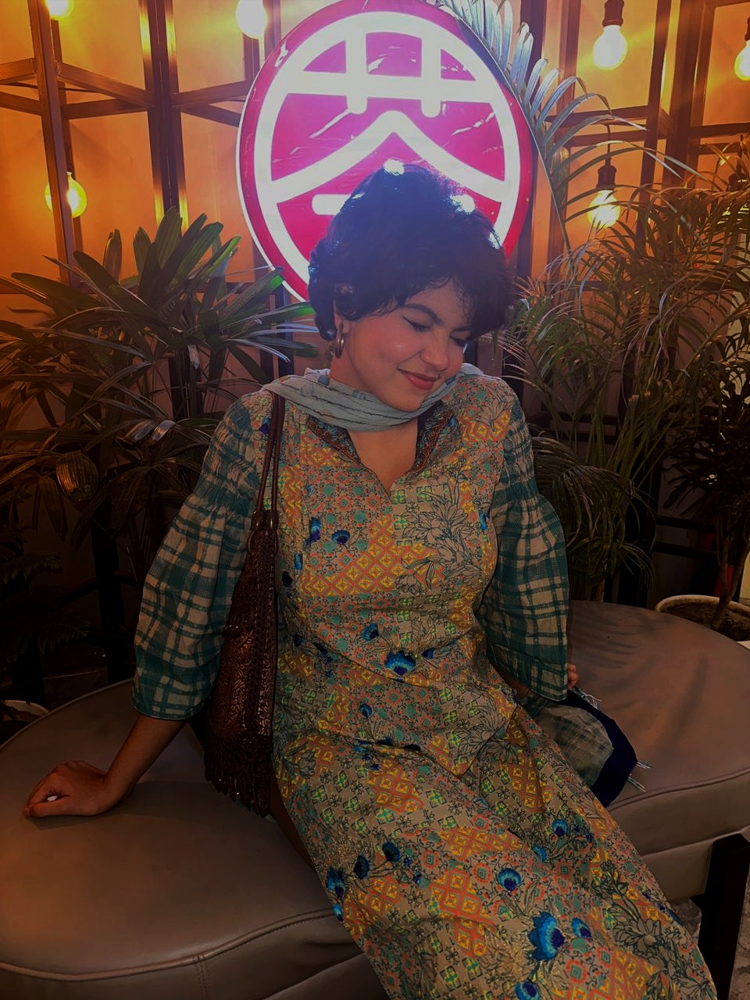The star is the definition of absolute perfection. She has a hair which reminds the boy of the fierce but seamless flow of the rivers. It flows up and down covering a portion of her smooth forehead and tucks infront of her ears where she endorses cute accessories. Her eyebrows are delicate as they follow smooth lines over her eyes which elaborates her face like a frame. Sometimes a small teep potrays the moon rising from within despite cloud darkening its colour. Her eyes, sire! Her eyes! You can see the entirity of the universe within her black pupils. Her eyes have their own mysterious language. She has a dimple which catches anyone from a distance and drowns them. She wears it like she doesn't know it. Her tender soft and tender lips are just gates to her melodious voice which reflects the sound of Orpheus' flute making everything alive. Her jawline is a seamless additionlook at it too long it cuts you. Her neck comes down and introduces the potruding collarbones which you can't but stare. She got the body unlike anything else. Like a very carefully sculpted sculpture which is timeless and effortless. But here's the fun part. She has a made of pristine materials those are only availed from the heavens. She is loving, kind, caring, giving, compassionate, honest, trustworthy, empathetic, emotional. She is funny. She is intelligent. She is silly. She is delightful and pleasant. But she knows when to break free. Cause she is passionate, dedicated, creative, artistic, colourful, mature, perfectionist, humble, workaholic, patient, sensible, persevering, independent and so on. That star my dear is you. Yes, you are the star, love. The star Samiha Rahman Shompurna.
A mathematical representation of the star
Let, aurko's love for Shompurna be= y, so, y=1/0=infinity=definition of perfection
Post credits
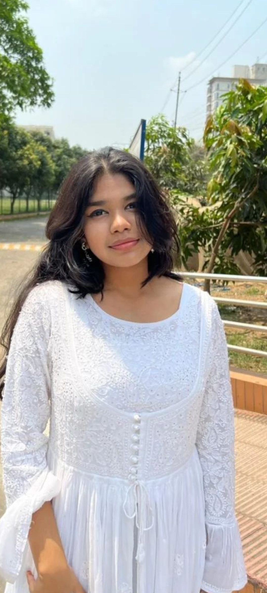Spriha helped a lot in the production of this simple ass webpage by collecting the photos

Thanks to Rusafa as well because she too helped in the making of this by providing with your photos by literally stalking her mom's facebook.
About the author
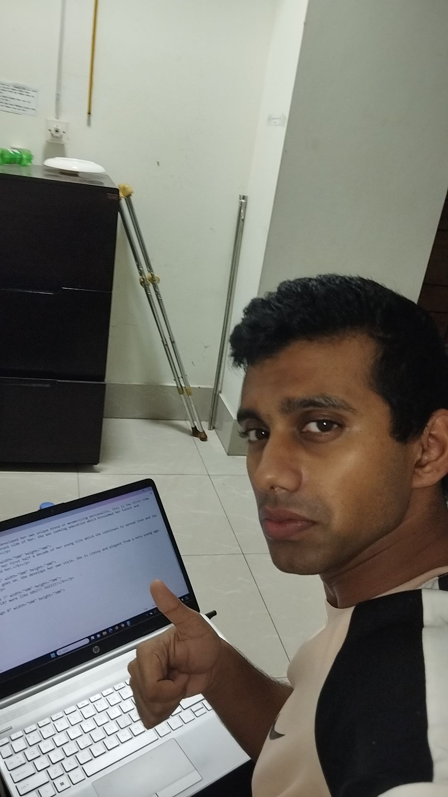This was my attempt to make you smile and give you a small hit of nostalgia. The webpage is poorly built due to the lack of knowlege on my part. Blame the HSC education of our country for your boyfriend not being able to create a proper webpage. (At least its not on a khaata lmao. Hope you liked it. Happy birthday once again, my love! I love you a lott!!)